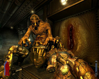

Prey
Archivierte Anleitung
Dieser Artikel wurde archiviert, da er - oder Teile daraus - nur noch unter einer älteren Ubuntu-Version nutzbar ist. Diese Anleitung wird vom Wiki-Team weder auf Richtigkeit überprüft noch anderweitig gepflegt. Zusätzlich wurde der Artikel für weitere Änderungen gesperrt.
Zum Verständnis dieses Artikels sind folgende Seiten hilfreich:
Prey  ist ein kommerzielles Computerspiel aus dem Jahr 2006, welches von den Human Head Studios im Auftrag von 3D Realms entwickelt wurde. Der Ego-Shooter handelt von einem jungen Mann namens Tommy, der eine außerirdische Bedrohung abwenden muss, indem er sich auf seine indianischen Wurzeln besinnt. Es basiert auf einer weiterentwickelten Doom 3 Engine. Eine Besonderheit des Spiels ist, das man diverse Wände hoch laufen, und dadurch auch über Kopf kämpfen kann. Auch die sogenannte "Portal"-Technik, die einen lückenlosen Übergang zwischen den Räumen ermöglicht, setzte neue Maßstäbe. 2008 wurde eine native Linux-Version veröffentlicht.
ist ein kommerzielles Computerspiel aus dem Jahr 2006, welches von den Human Head Studios im Auftrag von 3D Realms entwickelt wurde. Der Ego-Shooter handelt von einem jungen Mann namens Tommy, der eine außerirdische Bedrohung abwenden muss, indem er sich auf seine indianischen Wurzeln besinnt. Es basiert auf einer weiterentwickelten Doom 3 Engine. Eine Besonderheit des Spiels ist, das man diverse Wände hoch laufen, und dadurch auch über Kopf kämpfen kann. Auch die sogenannte "Portal"-Technik, die einen lückenlosen Übergang zwischen den Räumen ermöglicht, setzte neue Maßstäbe. 2008 wurde eine native Linux-Version veröffentlicht.
|  | |
| Spielszene | Spielszene |
Installation¶
Zunächst lädt man sich unter icculus.org entweder die Demo- oder Retail-Version herunter. Für die Retail-Version muss man die Spiel-CDs bzw. DVD zur Hand haben.
Danach den entsprechenden Installer ausführbar machen [3] und starten. Jetzt kann man ganz normal wie unter Windows sich durch den Installer klicken und die CDs einlegen.
Nach der Installation wird ein Menüeintrag unter "Anwendungen -> Spiele -> Prey" angelegt. Alternativ kann man das Spiel über die Datei prey im Verzeichnis des Spiels gestartet werden. Beim ersten Start wird man nach dem CD-Schlüssel gefragt, welcher online abgeglichen wird. Spielen kann man ohne den Datenträger.
Einstellungen¶
Es ist auf jeden Fall ratsam, sich eine Datei autoexec.cfg im Homeverzeichnis unter .prey/base/ anzulegen. Diese Datei wird vom Spiel bei jedem Start automatisch geladen. Sie eignet sich somit hervorragend, um eigene Konfigurationseinstellungen dauerhaft sicherzustellen.
Dazu kann man die gewünschten Einstellungen zunächst bequem im Spiel ändern und nach Beenden des selben die Konfigurationseinträge aus der Datei .prey/base/preyconfig.cfg in die autoexec.cfg übernehmen.
Die Einträge aus der autoexec.cfg überschreiben bei jedem Spielstart die Einträge in der preyconfig.cfg. Mehr Infos gibt es hier
Mods und andere Erweiterungen¶
Mods installieren und starten¶
Beim Installieren von Mods muss man darauf achten, ob das Archiv des heruntergeladenen Mods einen neuen Ordner kreiert oder nicht. Wenn ja, entpackt [5] man den Mod einfach ins Prey-Verzeichnis oder nach .prey im Homeverzeichnis. Wenn nicht, erstellt man vorher im Prey-Verzeichnis oder in .prey einen neuen Ordner und entpackt den Mod in diesen [3]. Anschließend kann er entweder im Hauptmenü unter Mods ausgewählt werden oder mit dem Befehl
prey set fs_game Ordnername
direkt gestartet werden. Mit Ordnername ist der Name des Ordners gemeint, in dem sich der Mod befindet.
Installation von anderen Erweiterungen¶
Um andere Erweiterungen wie neue Karten, Modelle etc. zu installieren, müssen sie einfach in den Unterordner base im Prey-Verzeichnis oder nach .prey/base im Homeverzeichnis entpackt werden.
Hinweis:
Die Namen der Mod-Ordner müssen klein geschrieben sein, sonst funktionieren sie nicht mit der Linux-Version von Prey.
Problemlösungen¶
Sound knackt¶
Sollten beim spielen Soundknackser auftreten, lässt sich dies über folgende Einträge in die autoexec.cfg beheben:
seta s_useOpenAL "1" seta s_libOpenAL "/usr/lib32/libopenal.so.1"
Wer die 32-bit-Version von Ubuntu hat, bei dem lauten die beiden Zeilen wie folgt:
seta s_useOpenAL "1" seta s_libOpenAL "/usr/lib/libopenal.so.1"
Automatische Bildschirmauflösung ungeeignet¶
Ist die Bildschirmauflösung des Spiels so gering, dass es nicht möglich ist diese über das Menü zu ändern, sollte die Auflösung mittels folgender Einträge in die autoexec.cfg geändert werden:
seta r_customHeight "800" seta r_customWidth "1280" seta r_mode "-1"

Infobox¶
| Prey | |
| Genre: | Ego-Shooter |
| Veröffentlichung: | 2006 |
| Publisher: | Activision |
| Systemvoraussetzungen: | mind. 1,6 GHZ / 512 MB RAM / 1,8 GB freier Festplattenspeicher / DVD- bzw. CD-ROM / Grafikkarte >= 64MB RAM |
| Medien: | DVD (1) bzw. CD (3) |
- Erstellt mit Inyoka
-
 2004 – 2017 ubuntuusers.de • Einige Rechte vorbehalten
2004 – 2017 ubuntuusers.de • Einige Rechte vorbehalten
Lizenz • Kontakt • Datenschutz • Impressum • Serverstatus -
Serverhousing gespendet von